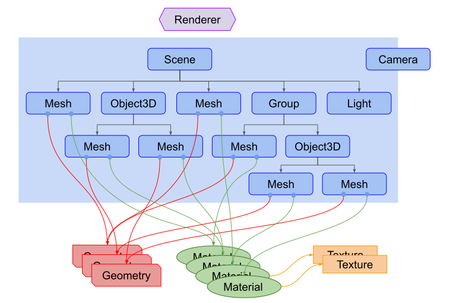

three.js is a JavaScript library used to build 3D websites. It uses
the WebGL Renderer to render graphics on to the screen. With three.js
you can animate, draw, and create 3D web pages without much trouble.
It was made by Ricardo Cabello and was hosted on Github under the MIT
License in 2010. Up until then it has been the most prefered and
easiest way to build 3D websites.
In this course you will learn the basics of three.js. You will learn
how to set it up, how to write boilerplate code for it to work and how
to draw, animate and load textures on to the screen.
Three.js Guide
Tanuj Padaliya| 4 minute read | 2020/11/24

What is three.js
How to set up a three.js project
-
Open your terminal and type in
npm init vite
- Enter your project name
- From the drop down menu click vannila
- Click Vannila and hit enter
This will create our a package.json file for us and everything else so we don't have to.
-
Open the project in your text editor and open the terminal
npm install three
- Go to the node_modules/build/three.min.js or three.js and move it to your js folder
- Add a script src tab into your index.html that links to your three.js file

three.js is composed of a scene, camera, and a renderer. The first thing we initialise is the scene, camera, and the renderer. We can initilise these by typing in the code shown below
const scene = new THREE.Scene();
const camera = new THREE.PerspectiveCamera(
75,
window.innerWidth / window.innerHeight,
0.1,
1000
);
const renderer = new THREE.WebGLRender;
renderer.setSize(window.innerWidth, window.innerHeight);
document.body.appendChild(renderer.domElement);
After creating the camera, scene, and the WebGL Renderer. We can draw our first object to the screen
In three.js to create a object you need to define 3 variables. The geometry of the object, the material, and the object itself. The geometry is the shape of the object and the material is the texture of the object. If your a more visual learner than here is a diagram to help demonsrate that
As you can see the mesh or the object is derived from the geometry and the material.
Enough talk lets do something with three.js now!
- First lets create the geometry of the object
const cubeGeo = new THREE.BoxGeometry(); -
After this we need to create the material or the texture of the object. We can do this by simply using the MeshBasicMaterial from three.js
const cubeMat = new THREE.MeshBasicMaterial({color: 0x00ff00}); -
And now we can make the object itself!
const cube = new THREE.Mesh(cubeGeo, cubeMat);
After all this we just need to add the cube to the screen and set the position of the camera!
scene.add(cube)
camera.position.z = 5;
The final code should look like this!
const scene = new THREE.Scene();
const camera = new THREE.PerspectiveCamera(
75,
window.innerWidth / window.innerHeight,
0.1,
1000
);
const renderer = new THREE.WebGLRenderer();
renderer.setSize(window.innerWidth, window.innerHeight);
document.body.appendChild(renderer.domElement);
const cubeGeo = new THREE.BoxGeometry();
const cubeMat = new THREE.MeshBasicMaterial({color: 0x00ff00});
const cube = new THREE.Mesh(cubeGeo, cubeMat);
scene.add(cube);
camera.position.z = 5;
renderer.render(scene, camera);
And your final output should look something like this